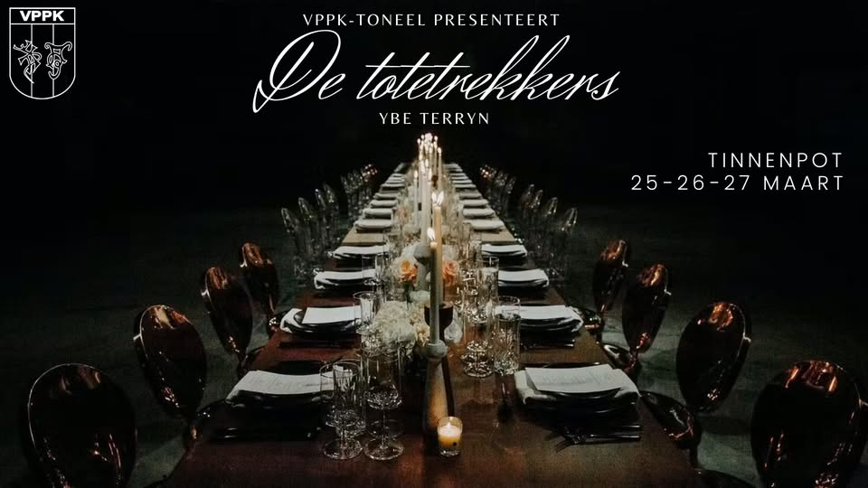

De Totentrekkers
Een groep studenten wordt tijdens hun jaarlijkse reünie geconfronteerd met oude en nieuwe geheimen
première: maart 2024
Lees𓏭
Toneelteksten en opvoeringen
Een groep studenten wordt tijdens hun jaarlijkse reünie geconfronteerd met oude en nieuwe geheimen
première: maart 2024
Lees